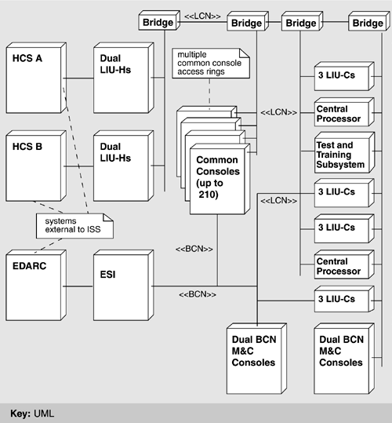
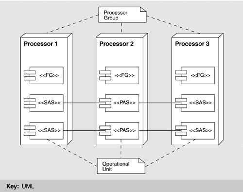
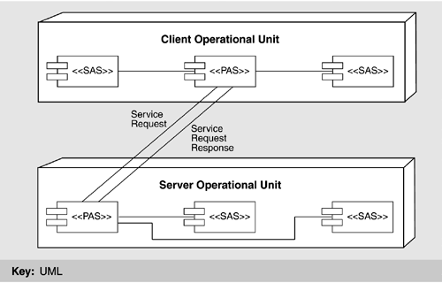
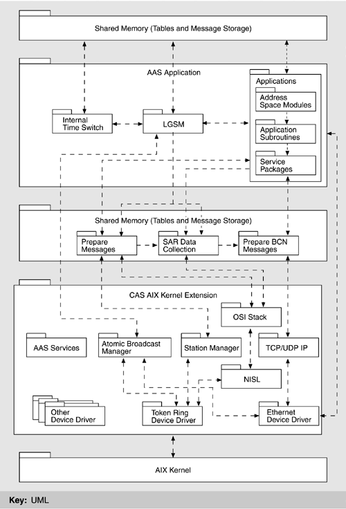
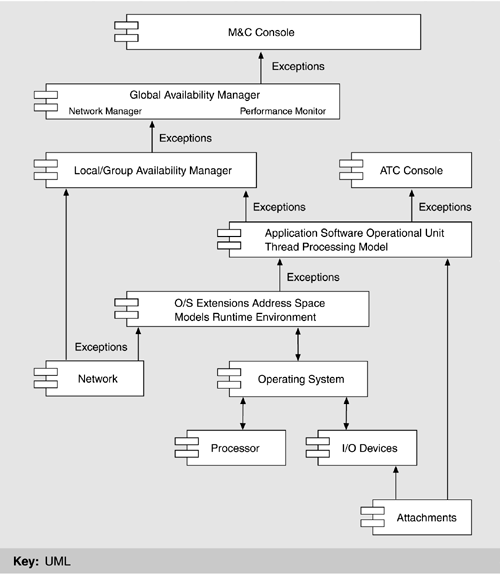

| [ Team LiB ] |
|
6.3 Architectural SolutionJust as an architecture affects behavior, performance, fault tolerance, and maintainability, so it is shaped by stringent requirements in any of these areas. In the case of ISSS, by far the most important driving force is the extraordinarily high requirement for system availability: less than 5 minutes per year of downtime. This requirement, more than any other, motivated architectural decisions for ISSS. We begin our depiction of the ISSS architecture by describing the physical environment hosting the software. Then we give a number of software architecture views (as described in Chapter 2), highlighting the tactics (as described in Chapter 5) employed by each. During this discussion, we introduce a new view not previously discussed: fault tolerance. After discussing the relationships among views, we conclude the architecture picture for ISSS by introducing a refinement of the "abstract common services" tactic for modifiability and extensibility, namely, code templates. ISSS PHYSICAL VIEWISSS is a distributed system, consisting of a number of elements connected by local area networks. Figure 6.5 shows a physical view of the ISSS system. It does not show any of the support systems or their interfaces to the ISSS equipment. Neither does it show any structure of the software. The major elements of the physical view and the roles its elements play are as follows:
Figure 6.5. ISSS physical view Each common console is connected to both the LCN and the BCN. Because of the large number of common consoles that may be present at a facility (up to 210), multiple LCN access rings are used to support all of them. This, then, is the physical view for ISSS, highlighting the hardware in which the software resides. MODULE DECOMPOSITION VIEWThe module elements of the ISSS operational software are called Computer Software Configuration Items (CSCIs), defined in the government software development standard whose use was mandated by the customer. CSCIs correspond largely to work assignments; large teams are devoted to designing, building, and testing them. There is usually some coherent theme associated with each CSCI—some rationale for grouping all of the small software elements (such as packages, processes, etc.) that it contains. There are five CSCIs in ISSS, as follows:
These CSCIs form units of deliverable documentation and software, they appear in schedule milestones, and each is responsible for a logically related segment of ISSS functionality. The module decomposition view reflects several modifiability tactics, as discussed in Chapter 5. "Semantic coherence" is the overarching tactic for allocating well-defined and nonoverlapping responsibilities to each CSCI. The Common System Services Module reflects the tactic of "abstract common services." The Recording, Analysis, and Playback CSCI reflects the "record/playback" tactic for testability. The resources of each CSCI are made available through carefully designed software interfaces, reflecting "anticipation of expected changes," "generalizing the module," and "maintaining interface stability." PROCESS VIEWThe basis of concurrency in ISSS resides in elements called applications. An application corresponds roughly to a process, in the sense of Dijkstra's cooperating sequential processes, and is at the core of the approach the ISSS designers adopted for fault tolerance. An application is implemented as an Ada "main" unit (a process schedulable by the operating system) and forms part of a CSCI (which helps us define a mapping between the module decomposition view and this one). Applications communicate by message passing, which is the connector in this component-and-connector view. ISSS is constructed to operate on a plurality of processors. Processors (as described in the physical view) are logically combined to form a processor group, the purpose of which is to host separate copies of one or more applications. This concept is critical to fault tolerance and (therefore) availability. One executing copy is primary, and the others are secondary; hence, the different application copies are referred to as primary address space (PAS) or standby address space (SAS). The collection of one primary address space and its attendant standby address spaces is called an operational unit. A given operational unit resides entirely within the processors of a single processor group, which can consist of up to four processors. Those parts of the ISSS that are not constructed in this fault-tolerant manner (i.e., of coexisting primary and standby versions) simply run independently on different processors. These are called functional groups and they are present on each processor as needed, with each copy a separate instance of the program, maintaining its own state. In summary, an application may be either an operating unit or a functional group. The two differ in whether the application's functionality is backed up by one or more secondary copies, which keep up with the state and data of the primary copy and wait to take over in case the primary copy fails. Operational units have this fault-tolerant design; functional groups do not. An application is implemented as an operational unit if its availability requirements dictate it; otherwise, it is implemented as a functional group. Applications interact in a client-server fashion. The client of the transaction sends the server a service request message, and the server replies with an acknowledgment. (As in all client-server schemes, a particular participant—or application in this case—can be the client in one transaction and the server in another.) Within an operational unit, the PAS sends state change notifications to each of its SASs, which look for time-outs or other signs that they should take over and become primary if the PAS or its processor fails. Figure 6.6 summarizes how the primary and secondary address spaces of an application coordinate with each other to provide backup capability and give their relationship to processor groups. Figure 6.6. Functional groups (FG), operational units, processor groups, and primary/standby address spaces When a functional group receives a message, it need only respond and update its own state as appropriate. Typically, the PAS of an operational unit receives and responds to messages on behalf of the entire operational unit. It then must update both its own state and the state of its SASs, which involves sending the SASs additional messages. In the event of a PAS failure, a switchover occurs as follows:
If failure is detected within a SAS, a new one is started on some other processor. It coordinates with its PAS and starts receiving state data. To add a new operational unit, the following step-by-step process is employed:
This process is not for novices, but can be navigated straightforwardly by experienced team members. A tactic discussed in a section that follows—code templates—was used to make the process more repeatable and much less error prone. The process view reflects several availability tactics, including "state resynchronization," "shadowing," "active redundancy," and "removal from service." CLIENT-SERVER VIEWBecause the applications in the process view interact with each other in client-server fashion, it is reasonable to show a client-server view of ISSS as well, although the behavior it describes largely mirrors that captured by the process view shown earlier. For completeness, Figure 6.7 shows a client-server view of the system. Figure 6.7. Applications as clients and servers The clients and servers were carefully designed to have consistent (as opposed to ad hoc) interfaces. This was facilitated by using simple message-passing protocols for interaction. The result reflects the modifiability tactics of "maintaining interface stability," "component replacement," and "adherence to defined protocols." CODE VIEWOne view not discussed in Chapter 2 but which sometimes appears in architectures of large systems is the code view. A code view shows how functionality is mapped to code units. In ISSS, an Ada (main) program is created from one or more source files; it typically comprises a number of subprograms, some of which are gathered into separately compilable packages. The ISSS is composed of several such programs, many of which operate in a client-server manner. An Ada program may contain one or more tasks, which are Ada entities capable of executing concurrently with each other. These are the code-view corollary of the processes described in the process view. Because Ada tasks are managed by the Ada runtime system, ISSS also employs a mapping of Ada tasks onto UNIX (AIX) processes, which means that all individual threads of control (whether separate Ada programs or tasks within a single Ada program) are independent AIX processes operating concurrently. Applications (i.e., operational units and functional groups) are decomposed into Ada packages, some of which include only type definitions and some of which are re-used across applications. Packaging is a design activity intended to embody abstraction and information hiding, and it is carried out by an operational unit's chief designer. LAYERED VIEWUnderlying the operation of the ATC application programs on the ISSS processors system is a commercial UNIX operating system, AIX. However, UNIX does not provide all the services necessary to support a fault-tolerant distributed system such as ISSS. Therefore, additional system services software was added. Figure 6.8 shows as a set of layers the overall software environment in a typical ISSS processor.[2]
Figure 6.8. ISSS software architecture layers. The associations show data and/or control flow, making this an overlay of layers and a component-and-connector view. The lowest two rows of elements above AIX represent extensions to AIX that run within the AIX kernel's address space. Because of performance requirements and for compatibility with the AIX operating system, these extensions are generally small programs written in the C language. Since they run within the kernels' address space, faults in these programs can potentially damage AIX itself; hence, they must be relatively small, trusted programs reflecting the "limit exposure" tactic, discussed in Chapter 5. Although the tactic is security based—namely, to prevent denial of service—in ISSS it is used to enhance availability, which is a complementary goal. Happily, sometimes tactics serve multiple quality attributes well. The Atomic Broadcast Manager (ABM) plays a key role in the communication among the Local Availability Manager modules within a sector suite to manage the availability of suite functions. The Station Manager provides datagram services on the LCN and serves as the local representative of the LCN network management services. The Network Interface Sublayer provides a similar function for the point-to-point messages, sharing its network information with the Station Manager. The next two layers represent operating system extensions that execute outside the AIX kernel's address space and therefore cannot directly damage AIX if they contain faults. These programs are generally written in Ada. Prepare Messages handles LCN messages for application programs. Prepare BCN Messages performs a similar function for messages to be sent on the BCN. One function of these programs is to determine which of the multiple redundant copies of an application program within a sector suite is the primary and thus is to receive messages. The Local Availability Manager provides the control information needed to make this determination. The top layer is where the applications reside. The Local Availability Manager and the Internal Time Synchronization programs are application-level system services. The Local Availability Manager is responsible for managing the initiation, termination, and availability of the application programs. It communicates with each address space on its own processor to control its operation and check its status. It also communicates with the Local Availability Manager on the other processors within its sector suite to manage the availability of suite functions, including switching from a primary to a backup copy of an application program when appropriate. The Local Availability Manager communicates with the Global Availability Management application that resides on the M&C consoles to report status and to accept control commands. The Internal Time Synchronization program synchronizes the processor's clock with that of the other ISSS processors, which is crucial to the operation of the availability management functions. (See the fault tolerance view, in Figure 6.9.) Figure 6.9. ISSS component-and-connector view for fault tolerance A NEW VIEW: FAULT TOLERANCEAs we said, the views listed in Chapter 2 are not exhaustive. In fact, there is no exhaustive list of views that constitute the complete software architecture for all systems or for any system. A welcome trend in software architecture is the recognition of the importance of architecture in achieving quality attributes, and therefore the importance of explicitly stating the quality attributes that the architecture is to provide. Toward this end, architects often produce views that show how the architecture achieves a particular quality attribute: a security view, for example. For runtime qualities, these views are in the component-and-connector category, showing runtime element interactions. For non-runtime qualities, these views are in the module category, showing how the implementation units are designed to achieve (for example) modifiability. The high availability requirements for ISSS elevated fault tolerance to an important role in the design of the system. For one thing, a cold system restart in the event of a failure was out of the question. Immediate (or at least rapid) switchover to a component on standby seemed the best approach. As design progressed and this idea became clearer, a new architectural structure emerged: the fault-tolerant hierarchy (Figure 6.9). This structure describes how faults are detected and isolated and how the system recovers. Whereas the PAS/SAS scheme traps and recovers from errors that are confined within a single application, the fault-tolerant hierarchy is designed to trap and recover from errors that are the result of cross-application interaction. The ISSS fault-tolerant hierarchy provides various levels of fault detection and recovery. Each level asynchronously
Each level is meant to produce another increment in system availability above that produced by the lower levels. The levels are as follows:
Fault detection and isolation are performed at each level in the hierarchy. Fault detection is by built-in tests, event time-outs, network circuit tests, group membership protocol, and, as a last resort, human reaction to alarms and indicators. Fault recovery is performed at each level in the software hierarchy and can be automatic or manual. For the Local, Group, and Global Availability managers, the recovery methods are table driven. In a PAS, there are four types of recovery from failure. The type of recovery used depends on the current operational status and is determined by the Local Availability Manager using decision tables, as follows:
Redundancy is provided by network hardware (LCN, BCN, and associated bridges), processor hardware (up to four processors per processor group, redundant recording), and software (multiple address spaces per operational unit). In addition to the availability tactics already seen with the process view, the fault tolerance view adds "ping/echo" and "heartbeat" as ways to detect failures, exception to percolate errors to the appropriate place for correction, and spare to perform recovery. RELATING THE VIEWS TO EACH OTHERDuring the preceding discussion, the elements in one view made "guest appearances" in other views. Although views form the backbone of understanding a system, deeper insight is often gained by examining the relations the views have to each other and, in particular, from examining mappings from view to view. This imparts a more holistic view of the architecture. In ISSS, CSCIs are elements in the module decomposition view. They are composed of applications, which in turn are elements in the process view and the client-server view. Applications are implemented as Ada programs and packages, shown in the code view, which in turn map to threads, which are elements in the concurrency view (not shown). The layered view describes the functionality assigned to the modules in the decomposition view in a way that shows what they are allowed to use. Finally, a specialized view focusing on the achievement of a particular runtime quality attribute—the fault tolerance view—uses the elements of the process, layer, and module views. Chapter 9, which covers how to document a software architecture, will prescribe a special place in the documentation package for capturing view relationships. For ISSS, that mapping would include tables that list the elements from the various views and show how they correspond to each other as described above. ADAPTATION DATAISSS makes extensive use of the modifiability tactic of "configuration files," which it calls adaptation data. Site-specific adaptation data tailors the ISSS system across the 22 en route centers in which it was planned to be deployed, and so-called preset adaptation data tailors the software to changes that arise during development and deployment but which do not represent site-specific differences. Adaptation data represents an elegant and crucial shortcut to modifying the system in the face of site-specific requirements, user-or center-specific preferences, configuration changes, requirements changes, and other aspects of the software that might be expected to vary over time and across deployment sites. In effect, the software has been designed to read its operating parameters and behavioral specifications from input data; it is therefore completely general with respect to the set of behaviors that can be represented in that data (reflecting the "generalize the module" tactic). For example, a requirements change to split the data in one ATC window view into two separate windows—a nontrivial change in many systems—could be accomplished by changing the adaptation data and a few lines of code. The negative side is that adaptation data presents a complicated mechanism to maintainers. For example, although it is trivial (from an operational point of view) to add new commands or command syntax to the system, the implementation of this flexibility is in fact a complicated interpretive language all its own. Also, complicated interactions may occur between various pieces of adaptation data, which could affect correctness, and there are no automated or semiautomated mechanisms in place to guard against the effects of such inconsistencies. Finally, adaptation data significantly increases the state space within which the operational software must correctly perform, and this has broad implications for system testing. REFINING THE "ABSTRACT COMMON SERVICES" TACTIC: CODE TEMPLATES FOR APPLICATIONSRecall that the primary–secondary address space scheme described earlier relies on redundancy to achieve fault tolerance: Copies of the software are stored on different processors. While the primary copy is executing, it sends state information from time to time to all of the secondary copies so that they can take up execution when called on. The implementation plan for these copies called for both to come from true copies of the same source code. Even though the primary and secondary copies are never doing the same thing at the same time (the primary is performing its duty and sending state updates to its backups, and the secondaries are waiting to leap into action and accepting state updates), both programs come from identical copies of the same source code. To accomplish this, the contractor developed a standard code template for each application; the template is illustrated in Figure 6.10. The structure is a continuous loop that services incoming events. If the event is one that causes the application to take a normal (non-fault-tolerant-related) action, it carries out the appropriate action, followed by an update of its backup counterparts' data so that the counterpart can take over if necessary. Most applications process between 50 and 100 normal events. Other events involve the transfer (transmission and reception) of state and data updates. The last set of events involves both the announcement that this unit has become the primary address space and requests from clients for services that the former (now failed) primary address space did not complete. This template has architectural implications: It makes it simple to add new applications to the system with a minimum of concern for the actual workings of the fault-tolerant mechanisms designed into the approach. Coders and maintainers of applications do not need to know about message-handling mechanisms except abstractly, and they do not need to ensure that their applications are fault tolerant—that has been handled at a higher (architectural) level of design. Code templates represent a refinement of the "abstract common services" tactic; the part of each application that is common is instantiated in the template. This tactic is related to several other tactics for modifiability. It reflects an "anticipation of expected changes" in the parts it leaves variable and it gives the processes a "semantic coherence," because they all do the same thing when viewed abstractly. The template lets programmers concentrate on the details of their application, leading to "generalizing the module." And by making the interfaces and protocols part of the template, they "maintain interface stability" and achieve "adherence to defined protocols." Figure 6.10 Code structure template for fault-tolerant ISSS applications
terminate:= false
initialize application/application protocols
ask for current state (image request)
Loop
Get_event
Case Event_Type is
-- "normal" (non-fault-tolerant-related) requests to perform actions;
-- only happens if this unit is the current primary address space
when X=> Process X
Send state data updates to other address spaces
when Y=>Process Y
Send state data updates to other address spaces
...
when Terminate_Directive => clean up resources; terminate := true
when State_Data_Update => apply to state data
-- will only happen if this unit is a secondary address space, receiving
-- the update from the primary after it has completed a "normal" action
-- sending, receiving state data
when Image_Request => send current state data to new address space
when State_Data_Image => Initialize state data
when Switch_Directive => notify service packages of change in rank
-- these are requests that come in after a PAS/SAS switchover; they
-- report services that they had requested from the old (failed) PAS
-- which this unit (now the PAS) must complete. A,B, etc. are the names
-- of the clients.
when Recon_from_A=>reconstitute A
when Recon_from_B=>reconstitute B
...
when others=>log error
end case
exit when terminate
end loop
Table 6.1 summarizes the approaches and tactics by which the ISSS software architecture met its quality goals.
|
| [ Team LiB ] |
|